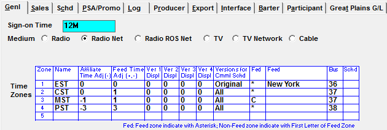
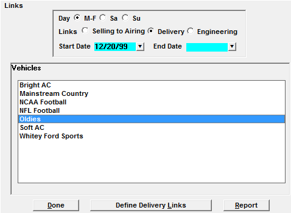
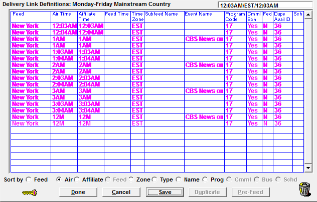

Delivery and Engineering Links
Delivery and Engineering Links are used to manipulate time zone information and spot feeds on the log, commercial schedule, or certificate of performance reports. Delivery and Engineering Links are defined with conventional and/or airing vehicles.
By using Delivery and Engineering Links you can:
- Produce logs for multiple time zones
- Repeat (re-feed) any breaks or time periods
- Produce Subfeeds for any vehicles
These links must be updated whenever there are any library modifications made to the conventional and/or airing vehicle.
Delivery Links Setup
Check “using delivery vehicles” in Lists -> Site Options -> General.
Vehicle Setup
In Lists -> Vehicle, select the Vehicle that will have Delivery and Engineering links. Go to the Lists -> Vehicles -> Options -> General to define the vehicle’s time zone. The time zone information is used by Delivery Links to determine what time zones should be produced for logs or commercial schedules.

Name - Enter the abbreviated name of the time zone. (i.e. EST, CST, etc.) If you are not using all time zones, just enter the one for the log/feed you need
Affiliate Time Adjustment – Used by Delivery Links. Enter the +/- hour that should be adjusted on your log from the scheduled spot time. For example: If all orders entered are based on EST then to produce a PST log you must adjust the time by “-3”
Feed Time Adjustment – Used by Engineering Links only
Displacements (Ver 1-4) - Version 1 Displacement is used for Delivery Links. Enter the additional minutes that the spot will be shown.
Versions for Commercial Schedule – Currently unused, leave “Original” default
“All Versions” was used in Delivery Links to determine if the spots needed to be on the commercial schedule.
Fed – If Delivery Links are required:
The “first” time zone defined in the list must be set to YES.
Any additional zones with Delivery Links must be set to YES.
Feed – If Delivery Links are required, enter a feed name or define one for this Vehicle.
Bus –Not required for Delivery Links.
Schedule – Enter the engineering schedule. Certain types of engineering hardware require this. Required for Delivery Links.
Define the programming library for the vehicle
After defining your vehicle’s inventory, drag the library onto the calendar display, and schedule. You will receive a message that warns you that links have not been defined. “Changes to Vehicle Events Without Link Changes, Schedule Anyway”. Click OK.
Define the Delivery and Engineering Links
Select the Links button at the top of the Programming screen.
Select either “delivery” or “engineering” Links.
Select the link dayparts: Monday-Friday (M-F), Saturday (Sa), or Sunday (Su)
Define the start date of the links. This is normally the start date the programming will be airing.
Select the vehicle and click either “Define delivery links” or “Define engineering links”.


The Links Screen is color coded for ease of use. Click the key icon to see information about what each color stands for. This screen will automatically show you all programming events that are defined in the library. The events listed here will appear on your log.
Feed shows the feed from the Vehicle Option Table.
Air Time shows the air time the event is scheduled.
Affiliate Time shows the time the affiliate will air the spot. This value is based on whatever is defined in the Displacement 1 of the Vehicle Option Table. This is the time that will print on the log
Feed Time is used to show the subfeed time for this event.
Time Zone defines the time zone for this event.
Subfeed Name shows the subfeed if defined for this event.
Event Name shows the event name defined in the library.
Program Code shows any program code that was defined in the comment field. This is a mandatory field for delivery links.
Commercial Schedule indicates if this event is to print on the commercial schedule, certificate of performance or logs.
Feed indicates if this is a fed spot
Bus for engineering from the Vehicle Option Table.
Sch for engineering from the Vehicle Option Table.
Changing Delivery and Engineering Links
If any events need to be removed, drag them to the trash.
If any events need to be added, use Duplicate to create the highlighted line.
If no events need to be changed or all changes are complete, click Save and Done.
Print a Preliminary Log to verify your Delivery Links are correctly defined.
Modifying Delivery and Engineering Links
If there are any changes to the avail times for a vehicle using delivery links, you must adjust the links as well. Drag the new library to the calendar, schedule the new programming. You will receive a message, “Changes to Vehicle Events Without Link Changes, Schedule Anyway?” Click yes. After scheduling is complete, modify the links and schedule again.
After defining and scheduling your libraries, click on the Links button. Select Engineering Links, M-F, Sa, or Su, enter a start date, and select your vehicle.
Delivery Links and Affiliate Pledge Rules
On the Delivery Links screen, think of the "air time" field as the "network avail time", and the "affiliate time" in Delivery Links as the time that the spot will air in local time at that station. Remember, when Delivery Links are used, the pledge status is always set as Live.
With this in mind:
- If a time zone is designated as the ‘fed from’ zone with an * in the fed field the Affiliate Time must be used for both the Feed and Pledge times in the agreement screen.
- This is because the time at which the spot is fed and aired is the “local time.”
- If a time zone is not the fed zone, but is offset from the fed zone in the time zone table, the affiliate agreement “Feed Time” will be the “Air Time” from the Delivery Links screen (the affiliate’s time zone), adjusted by the time zone offset defined in the time zone table. The affiliate agreement “Pledge Time” will be the “Affiliate Time,” the time zone in which the affiliate resides.
- For example, if the vehicle feed is designated as eastern, and a station is in the central time zone that is offset by -1, and there is a central Delivery link with a 2a air time and a 1a affiliate time, the affiliate agreement’s feed time will be 1a (2a Delivery Link Air Time – 1 hour offset) and the pledge time will be 1am (the Affiliate Time defined in Delivery Links).
For a vehicle that is using Delivery Links, when agreement pledges are created using the Auto-Fill button, the following rules apply:
- If the Feed Time matches the Pledge Time, the Status will be set to "1 - Air Live".
- If the Feed Time does not match the Pledge Time (based on adjustments made to the affiliate time in Delivery Links), the Status will be set to "2 - Air Delay".
If an avail airs after midnight in Eastern time but is set to air prior to midnight in another time zone (because of an adjusted affiliate time in Delivery Links), the day will be set to the day prior to the Eastern time day, and the avail will be indicated with a "B" in the Before/After field on the pledge screen.